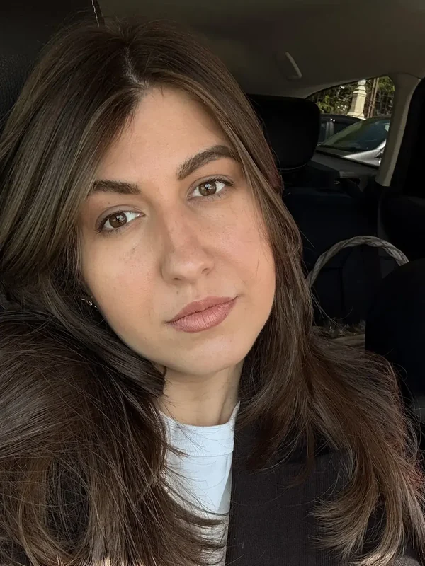
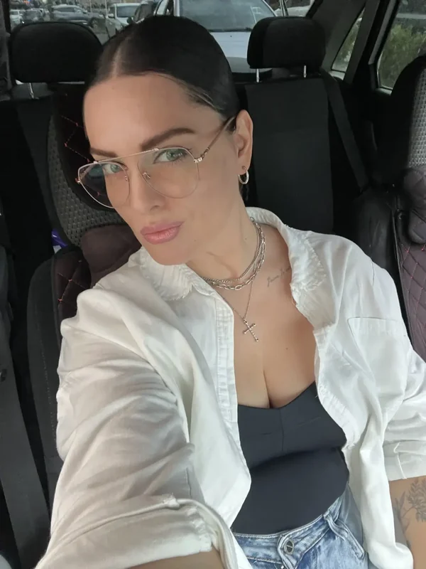
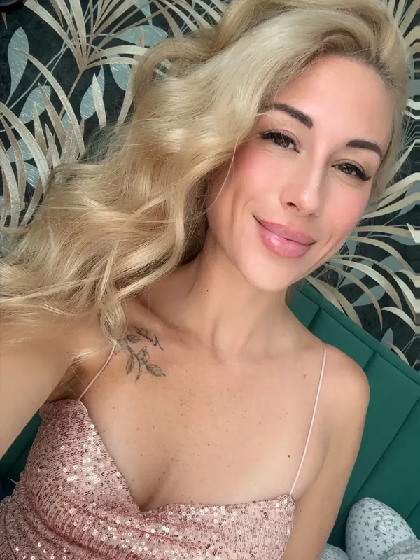
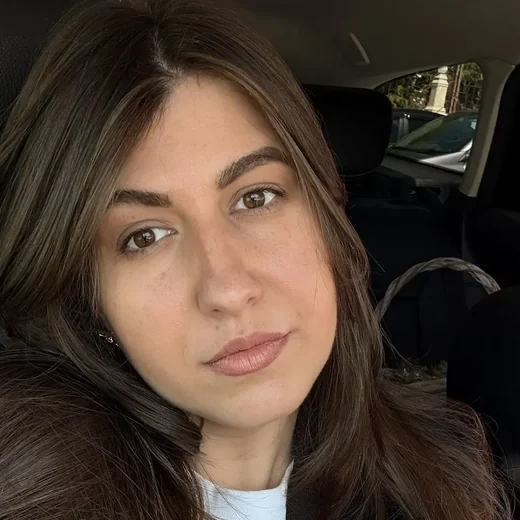
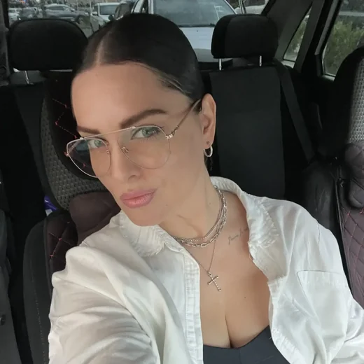
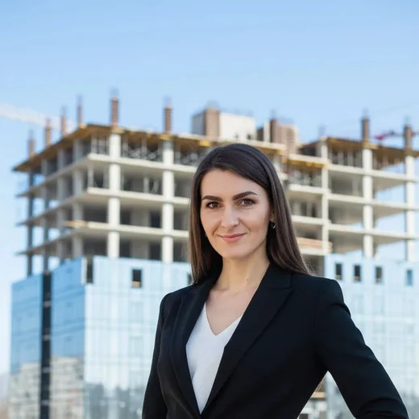

Анна КовалёваМенеджер проектов
Ведёт с первого звонка до ключей: договор, сроки, ответы в любой день. Текст рыба — поставим настоящий.
Вторая десятка, номера 11–20, чтобы не путались с первой. Имена, должности, цитаты и объекты — рыба. Первые десять здесь: варианты 01–10.
Плитки разного размера: один человек крупно, остальные плотно вокруг. Живо и не выглядит как анкеты в ряд.



Не витрина, а справочник: у каждого своя кнопка. Клиент видит, кому именно он будет звонить.



Люди привязаны к этапам стройки. Отвечает не «кто мы красивые», а «кто будет решать твой вопрос».
Договор и сметаСчитает дом, объясняет каждую строку и подписывает договор.
СтройкаСтавит бригады, следит за графиком, отвечает за срок.
Проверка работПриезжает на этапы, проверяет скрытые работы, фотографирует.
Отделка и планировкаПомогает выбрать материалы и довести дом до жилого вида.
Подпись поставлена вертикально вдоль фото. Строгий, «журнальный» вид, ничего лишнего.
Каждый говорит одну фразу о своей работе. Читается как отзывы, только изнутри компании.
«Я отвечаю на звонки и в воскресенье. Дом — это не покупка чайника, вопросы возникают постоянно».
«Скрытые работы фотографирую всегда. Потом стену не вскроешь, а вопросы останутся».
«Знаю, где сегодня каждая бригада. Если объект встал — мне звонят первой».
«Половину сметы можно не тратить, если сразу понять, как вы будете жить в доме».
Фон — фотография построенного дома, портреты в арках. Связывает людей с тем, что они строят.
Двадцать пять человек в штате. Текст рыба — поставим настоящий.
Сначала только лица и должности. Нажал — раскрылся рассказ. Коротко сверху, подробно по желанию.
Ведёт с первого звонка до ключей: договор, сроки, ответы в любой день. В компании седьмой год, сдала больше сорока домов. Текст рыба.
Проверяет каждый этап стройки и подписывает акты скрытых работ. В компании седьмой год, сдала больше сорока домов. Текст рыба.
Держит бригады и график: знает, где сегодня каждый объект. В компании седьмой год, сдала больше сорока домов. Текст рыба.
Помогает выбрать планировку, отделку и не переплатить за лишнее. В компании седьмой год, сдала больше сорока домов. Текст рыба.
Под каждым фото объект и месяц. Команда показана в работе, а не на белом фоне.
Список по порядку: цифра, фото, рассказ. Спокойный ритм, хорошо читается сверху вниз.
Ведёт с первого звонка до ключей: договор, сроки, ответы в любой день. Текст рыба — поставим настоящий.
Проверяет каждый этап стройки и подписывает акты скрытых работ. Текст рыба — поставим настоящий.
Держит бригады и график: знает, где сегодня каждый объект. Текст рыба — поставим настоящий.
Помогает выбрать планировку, отделку и не переплатить за лишнее. Текст рыба — поставим настоящий.
Самый компактный: лица внахлёст, две строки и кнопка. Ставится куда угодно, даже в подвал страницы.
Инженеры, прорабы и менеджеры в штате — без подрядчиков с улицы. Текст рыба.
Познакомиться с командойСкажите номер — соберу его как настоящий раздел.